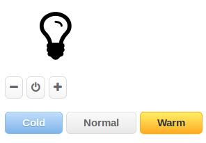
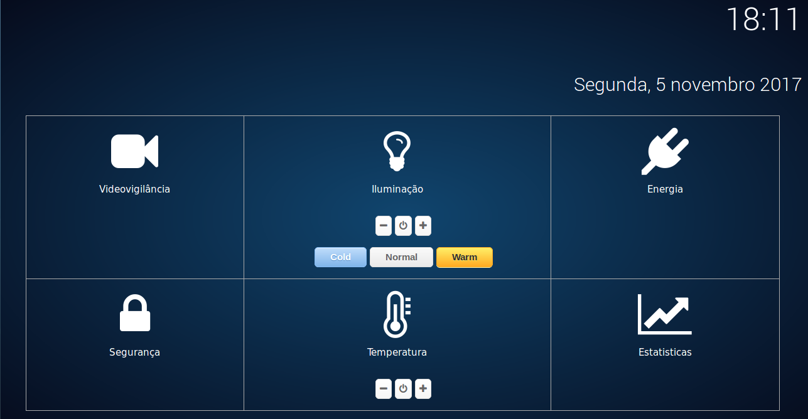

Planilha de controlo de horas de trabalho por parte de cada membro da equipa: Planilha de Horas
Decisão do tema do projeto e os respetivos sensores a serem usados
Elaboração do documento Visão: Relatório Visão
Foi decidida a elaboração de um documento mais elaborado de modo a não sobrecarrgar o site com demasiada informação. Assim, o site apresenta apenas tópicos claros e diretos, sendo que o documento visão apresenta uma uma justificação mais detalhada
Este modelo será aplicado a todo tipo de documentação relacionada com o projeto
Distribuição de tarefas
Elaboração da Wiki no CodeUA
Elaboração do site para o XCOA usando HTML5, CSS e JavaScript
Criação da Planilha de Horas como forma de orientar o número de horas dispendidas por cada elemento do grupo
Continuação da elaboração do documento Visão: Relatório Visão
Inicio do desenvolvimento da interface gráfica para o sistema de informação.
Com o hub do IKEA Tradfri, reprogramou-se o sistema Tradfri de modo a que o controlo da iluminação passasse a ser executado através do comando virtual da interface gráfica
Atualização do site no XCOA, passando este a incluir um manual de utilização para que qualquer utilizador consiga executar o sistema desenvolvido até à data
Tratamento da informação relativa aos recursos necessários ao projeto, casos de uso e atores
Início do estudo dos requisitos ao sistema
Resultados obtidos:
- Ligar/Desligar lâmpada atráves da interface gráfica
- Mudar a intensidade da lâmpada através da interface gráfica
- Alterar o modo da lâmpada (quente, frio, normal) através da interface gráfica

Preparação da documentação relativa à entrega da semana.
Estudo da arquitetura do sistema e dos casos de usos do mesmo.
Atualização do site no XCOA, introduzindo novos recursos usados até à data e os requisitos de hardware e software do sistema.
Melhoramento do design da interface gráfica do sistema de informação.

Preparação da documentação de entrega da semana respetiva ao M3.
Atualização dos recursos usados até à data e dos que virão a ser usados em futuras entregas e novos requisitos de hardware e software necessários ao projeto.
Melhoramento das funcionalidades do sistema na secção do cliente.
Resultados Obtidos:
- Hub do Tradfri e backend a comunicar por broker
- O sistema a funcionar na nova interface gráfica
Preparação da documentação relativa à próxima entrega
Correção de algumas incoerências relativas à arquitetura do sistema.
Breve descrição da arquitetura de alto nível e descrição da arquitetura do sistema, justificando devidamente as respetivas escolhas.
Montagem de sensores e inicio da configuração do RaspberryPi 3 a ser usado para o sistema de informção.
Inicio do tratamento sensores adicionais ao sistemas, como por exemplo o sensor de temperatura e humidade (DHT11)